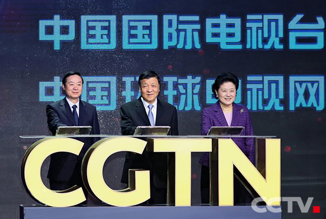

习近平致信祝贺中国国际电视台（中国环球电视网）开播
2016-12-31
来源：中央电视台官网
2016年12月31日，中国国际电视台（中国环球电视网）正式开播。中共中央总书记、国家主席、中央军委主席习近平发来贺信，代表党中央致以热烈祝贺。
贺信指出：“值此中国国际电视台（中国环球电视网）开播之际，我代表党中央，对此表示热烈的祝贺！
当今世界是开放的世界，当今中国是开放的中国。中国和世界的关系正在发生历史性变化，中国需要更好了解世界，世界需要更好了解中国。
中国国际电视台（中国环球电视网）要坚定文化自信，坚持新闻立台，全面贴近受众，实施融合传播，以丰富的信息资讯、鲜明的中国视角、广阔的世界眼光，讲好中国故事、传播好中国声音，让世界认识一个立体多彩的中国，展示中国作为世界和平的建设者、全球发展的贡献者、国际秩序的维护者良好形象，为推动建设人类命运共同体作出贡献。”
中共中央政治局常委、中央书记处书记刘云山出席开播仪式并作重要讲话。中共中央政治局委员、国务院副总理刘延东出席开播仪式。中共中央政治局委员、中央书记处书记、中宣部部长刘奇葆在开播仪式上宣读了习近平总书记的贺信。
刘云山指出，习近平总书记重要指示深刻阐明了成立中国国际电视台的重要意义，指明了中国国际电视台的发展方向和目标任务，为办好中国国际电视台提供了重要遵循。贯彻落实好习近平总书记重要指示，做好中国国际电视台工作，要牢牢把握正确方向，树立高度的文化自信，把正确方向和导向体现到工作各个方面，自觉承担起联接中外、沟通世界的职责使命。要把内容建设摆在首位，宣传好以习近平同志为核心的党中央治国理政新理念新思想新战略，讲好当代中国发展进步的精彩故事，阐释好中国道路、中国理念、中国贡献，在重大全球事务和国际议题中发出中国声音。要积极推动媒体融合发展，发展全媒体业态，拓展新技术新业务，提升对外传播力。要把改革创新精神贯穿到工作各方面，实施本土化差异化战略，形成一流的治理结构、运行机制、工作效率，努力打造具有全球影响力的媒体品牌。要建设高素质人才队伍，创新选人用人机制，以人才优势支撑发展优势。有关方面要加大支持力度，为中国国际电视台开展工作创造良好条件。
中宣部副部长、国家新闻出版广电总局局长兼中央电视台台长聂辰席表示，要认真学习领会、深入贯彻落实习近平总书记系列重要讲话精神和重要指示要求，牢固树立“四个意识”特别是核心意识、看齐意识，认真贯彻落实云山同志重要讲话精神和中央、中宣部的部署要求，调动优势资源，集中精干力量，以改革创新精神做好工作，努力把中国国际电视台（中国环球电视网）打造成为具有较强国际影响力的外宣旗舰媒体。
中央宣传思想工作领导小组成员，中宣部、中联部、中央台办、中央编办、中央网信办、外交部、教育部、财政部、人力资源和社会保障部、文化部、国家新闻出版广电总局、国务院侨办、国务院港澳办、人民日报、新华社、中国日报、中国国际广播电台、中新社等单位负责同志，以及全体在京台领导和相关部门负责人、干部职工代表等也参加了开播仪式。
中国国际电视台（中国环球电视网）英文简称CGTN，包括6个电视频道、3个海外分台、1个视频通讯社和新媒体集群，将以丰富的内容和专业的品质为全球受众提供更好的服务。